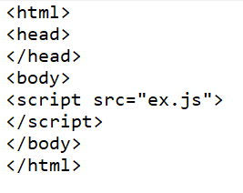

External JavaScript
we can create external javascript file and embed it in many html pages.
It provides code are usability beacuse single JavaScript file can be used in several html pages.
An external javascript file must be saved by .js extension.
It is recommended to embed all JavaScript files into a single file.It increases the speed of the webpage.
for example:
JS External File
save this with .js extention.
HTML webpage
save this with .html extension.
